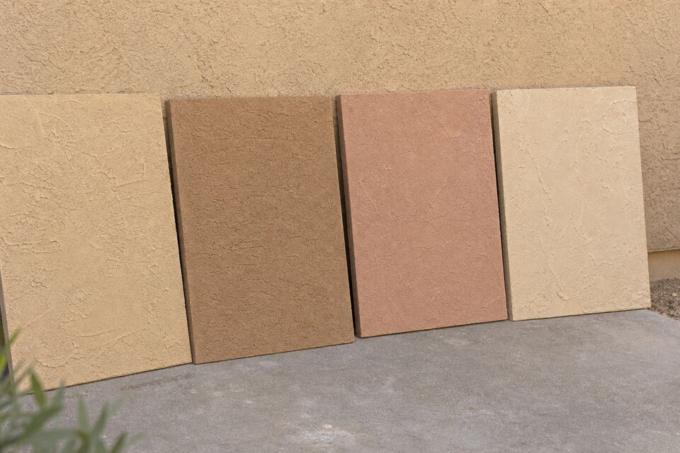

Synthetic vs Traditional Stucco in Santa Fe
Three skins share this town: cement stucco, synthetic acrylic finishes, and the lime and earth plasters on historic adobe. They look like cousins and behave like strangers — different aging, different repairs, different rules about water. Here is the working guide, written for the owner deciding what goes on the wall next.

Traditional cement stucco
The three-coat workhorse on most Santa Fe homes. It breathes, takes integral color or color coats, repairs predictably (a cement wall patched today blends honestly after a season of sun), and shrugs at UV. Its honest weaknesses: it is rigid, so it telegraphs movement as cracks, and it asks for cured, unhurried application. For most walls in this climate it remains the default for good reasons.
Synthetic / acrylic finishes
Acrylic finish systems bring flexibility — they ride over hairline movement — plus rich, consistent color and design latitude. Their trade-offs at 7,000 feet: UV embrittles them on a faster clock than cement, repairs are harder to hide (acrylic patches read), and as low-breathability skins they punish any wall with an unresolved moisture source behind them. On sound, dry, modern construction they perform; as a bandage over a wet wall they are a slow mistake.
Lime and earth plasters — the adobe rule
Historic adobe is mud, and mud must breathe. Lime and earth plasters move moisture out of the wall; cement stucco and elastomeric coatings trap it in, and trapped moisture dissolves adobe from the inside — the classic preservation failure across Northern New Mexico. The rule is short: on real adobe, breathable plaster only. If you are not sure what your wall is, that is the first thing the visit determines, free of charge to your assumptions.
How to actually decide
Match the skin to the wall, not the trend: real adobe takes lime or earth, period. Sound modern framing takes cement by default, acrylic when its flexibility or finish goals earn the trade-offs. Walls with moisture history fix the water first and breathe afterward. And whatever the system, the installer’s coat schedule and water detailing matter more than the brand on the bucket — the installation page covers the questions that sort bids.
Not sure what your wall even is?
That is the most common starting point in this town. Send the form — identifying the wall is the first five minutes of the visit.
Questions people ask
How can I tell if my home is real adobe?
Age and construction era help (pre-1940s Santa Fe and valley homes often are), thick deep-set walls and rounded openings suggest it, but walls fool people constantly — plenty of 'adobe-style' homes are frame. The visit settles it, and the answer changes every material decision after.
Can elastomeric coating go over my old stucco?
Over sound cement stucco on frame construction with no moisture issues — sometimes, with eyes open about breathability. Over adobe or over walls with active leaks — no; sealing in moisture is how those walls are destroyed politely.
Which finish lasts longest in Santa Fe?
Well-installed cement with a maintained color coat is the longevity benchmark here; UV is harder on acrylics. But installation quality beats material choice — a rushed three-coat loses to a careful acrylic every time.